개념 학습
정렬 알고리즘
정렬은 나열된 데이터를 특정 속성을 기준으로 차례대로 재배열하는 작업이고, 정렬 알고리즘은 데이터를 효율적으로 재배열하는 과정을 정의한 것이다.
정렬의 예시
동물을 나열할 때 키를 기준으로 오름차순 또는 내림차순으로 정렬할 수 있다.
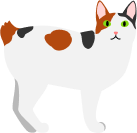
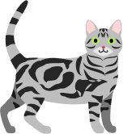
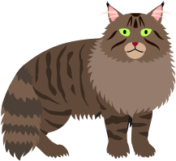
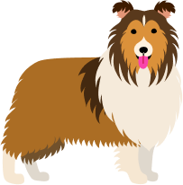
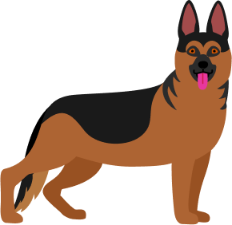
동물들의 키에 따른
오름차순 정렬
오름차순 정렬
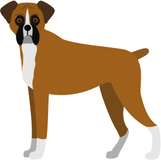
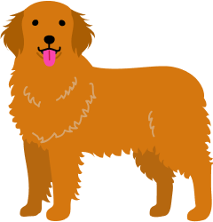
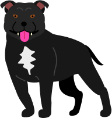
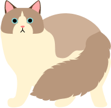
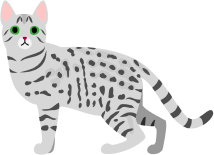
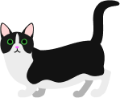
동물들의 키에 따른
내림차순 정렬
내림차순 정렬
정렬 알고리즘의 사용 예시
정렬 알고리즘은 데이터를 정리하는 데 매우 유용하며, 다양하게 활용된다. 정렬 알고리즘의 사용 예시를 살펴보자.
고객 목록
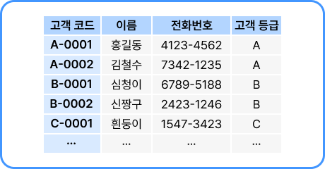
고객 목록을 고객 코드를 기준으로 정렬
온라인 쇼핑몰 검색 목록
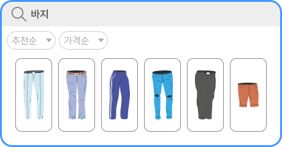
물건 목록을 추천순이나 가격순으로 정렬
정렬 알고리즘의 종류
대표적인 정렬 알고리즘으로는 버블 정렬, 삽입 정렬, 퀵 정렬이 있다. 이 세 가지 정렬 방법은 각각의 특징과 장점이 있어 상황에 따라 적절한 알고리즘을 선택하는 것이 중요하다.
버블 정렬
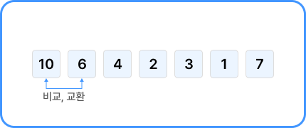
인접한 두 개의 데이터를 비교하여 순서를 바꾸면서 정렬하는 방식
삽입 정렬
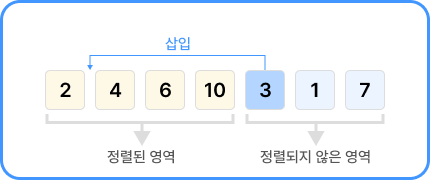
데이터를 정렬된 영역과 그렇지 않은 영역으로 나누고, 정렬되지 않은 영역의 요소를 정렬된 영역으로 하나씩 삽입하면서 정렬하는 방식
퀵 정렬
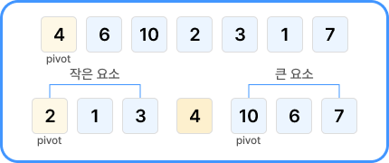
큰 문제를 작은 문제로 쪼개는 과정을 반복하면서 정렬하는 방식